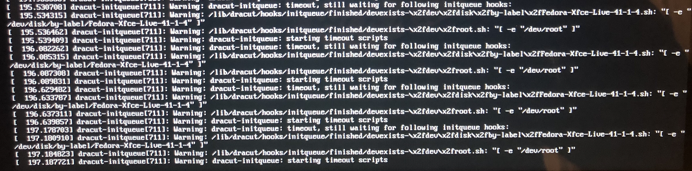
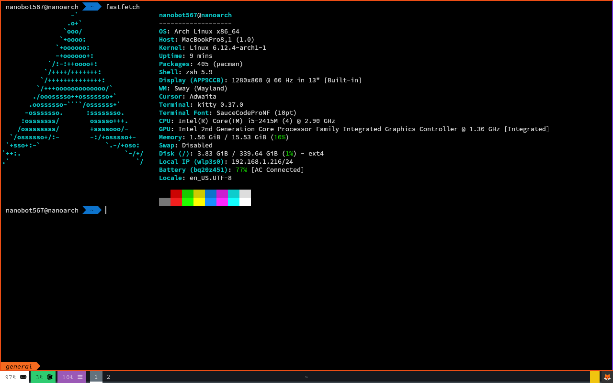

I've always liked the premise of a system so bare-bones that you quite literally only install what you need onto it, so I thought I'd try to install Arch Linux on an old MacBook Pro I had lying around!
I had actually put Linux on this MacBook already (Linux Mint) alongside an install of Mac OS X Lion and it went incredibly smoothly, so I thought that it might be the same story with Arch (spoiler: it was not).
First thing I did was just straight up delete every partition on the drive besides the one containing Mac OS in recovery mode's Disk Utility. This went fine, but it left behind the old bootloader from Mint (GRUB), which I thought would be alright for now.
I then flashed Arch onto a spare USB drive and tried to boot from it, which... didn't work 😆. It basically just hung on a black screen, even with MacBook Pro-specific kernel parameters. After a while I just gave up on booting Arch entirely and gave Fedora XFCE a go, and that ALSO didn't work. Fedora at least displayed something onscreen, which was nice since I could at least try to figure out what was going on.
Fedora would hang for a while on boot, but then spout this string of messages every couple of seconds:
After a quick DuckDuckGo search it seemed like Fedora couldn't find any logical volumes on the system (whatever that means LOL), and all of the solutions I found dealt with a complete install of Fedora and not the live boot version, so I couldn't really fix the issue.
I thought I should try to delete GRUB off of my EFI boot partition at this point since I thought that might update the logical volumes index (if there even is one). In hindsight though this was pretty pointless, I don't know how that would have helped anything XD
I assumed that USB booting was completely impossible (for some reason) so I tried to use a tool called bootconfig, but it was written for much newer versions of Mac OS, so that was a bust too.
Finally, I decided to just bite the bullet and wipe the entire drive so I could start fresh.
After THAT was done, Arch still wouldn't boot, and neither would Fedora for the exact same reason!! I was genuinely worried I screwed something up at this point, it made no sense that the error persisted even after essentially restoring to factory defaults.
It took me an hour or two of tinkering around to realize that I could try to install Linux Mint again, since that for sure worked last time. So, I did just that, and thankfully it booted up just fine!
I ended up reinstalling Linux Mint so I could at least have some Linux distro running in case installing Arch was impossible.
NOW I could actually start doing stuff! I discovered a tool called archstrap which really saved my neck here. From Linux Mint, I could set up my Arch install without ever touching the live boot installer!
The first time I ran through the Arch install process I had no idea what was going on, it essentially was a massive infodump of command line utilities I had never heard of and techological terms I hadn't seen before either. So, inevitably, the first try installing Arch was a failure, and the second try was too (for various reasons, one of which being I ran `pacman` instead of `pacstrap` when installing necessary packages). But I kept trying stuff, and eventually I got a functional Arch install!
I then installed rEFInd (which worked without any issues). However, after rebooting, I noticed that Arch didn't boot at all and it skipped straight to rEFInd (this should not have happened :/), and there was also no Arch boot option. Apparently I had forgotten to actually create the boot entry with `efibootmgr` 🤦. So, I went ahead and did that, and Arch booted just fine after restarting!!
I went ahead and took this chance to get most of my stuff set up (swaywm, kitty, lvim). I had a couple issues with connecting to WiFi though, which were fixed by installing the right Broadcom chip drivers (I forget the name of the package though, haha), but other than that everything was relatively simple to install and configure.
Later on I created an actual entry for Arch in rEFInd, and that also went well but also took a few tries.
Finally, after all of that, I successfully got Arch in a state I'm happy with!!
Something I'll mention about installing Arch is that it's fundamentally very simple to do, although the installation guide looks scary XD. It all makes sense what you're doing, and that's mostly in part to how well everything is explained (thank you, Arch wiki contributors). It could also just appear simple to me now because I've read the entire guide about five times 💀
As for Arch itself, I can definitely see why people love it so much. It's honestly kind of fun to set up, since you're picking and choosing exactly what you want with absolutely no bloat. Even after getting my install the way I'd like it, I only used about four gigabytes of space TOTAL!